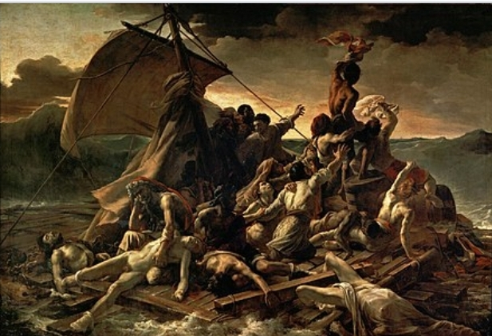

Galary 2024
by Owami Maswanganyi
Look at art
The Kiss
Gustav Klimt, 1908
Osterreichische Galerie
Belvedere, Vienna,
Austria
The Mona Lisa
Leonardo da Vinci
Anchino, Italy
The Garden Of Earthly Delights
Hieronymus Bosch, 1515
's-Hertogenbosch, Netherlands
The Swing
Jean-Honoré Fragonard
Grasse, France
American Gothic

Grant Wood
Iowa, United States of America
Luncheon Of The Boating Party
Pierre-Auguste Renoir
Limoges, France
Whistler's Mother

James McNeill Whistler
Lowell,Massachusetts,United States of America
The Raft Of Medusa

Théodore Géricault
Roeun,France
Wanderer Above The Sea Of Fog
Caspar David Friedrich
Greifswald, Germany
The Birth Of Venus
Sandro Botticelli
Florence, Italy
The Starry Night
Vincent van Gogh
Zundert, Netherlands
Las Meninas
Diego Velázquez
Seville, Spain
Girl With A Pearl Earring
Johannes Vermeer
Delft, Netherlands
Bal du Moulin de la Galette

Pierre-Auguste Renoir
Limoges, France